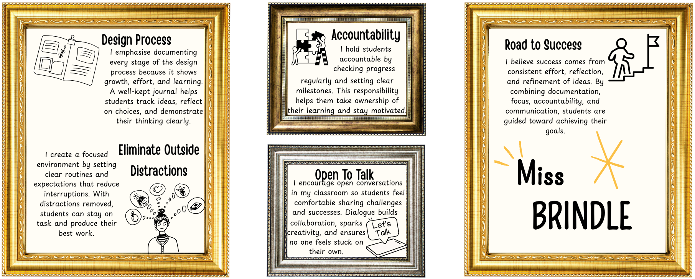

About Me

I’m a third-year university student at Australian Catholic University (ACU), currently working toward becoming a high school woodwork and Industrial Technology teacher. I’ve always had a strong interest in designing, building, and understanding how things are made — from the structure of furniture to the process of turning raw materials into functional products. Teaching gives me the opportunity to share that passion — not just for timber and tools, but for creativity, problem-solving, and confidence-building through making. My goal is to inspire students to think critically, take pride in their work, and walk away with real-world skills that matter beyond the classroom.
I live in the beautiful Illawarra region, where the balance of coast and bushland keeps me grounded and inspired. Outside of uni and placements, I spend time sketching out project ideas, exploring hardware stores like they’re art galleries, and always learning more about sustainable practices in timber and design. I’ve also really enjoyed using platforms like UpRising on IdeaSpies, which showcase clever, creative innovations from young people across Australia — and I’d love to encourage my future students to use it as a source of inspiration for their own ideas, designs, and problem-solving projects. I am committed to building a workshop culture based on respect, inclusivity, and safety — where every student feels supported to learn, try, fail, and succeed.
How I Teach, How We Succeed
My approach centres on hands-on learning, iterative design, and authentic tasks that connect curriculum with real-world problem solving. I value clear routines, visible safety practices, and inclusive strategies that give every student the confidence to develop both technical skills and creative thinking.
Inspiration: UpRising
UpRising by IdeaSpies is a platform that highlights innovative ideas from young people across Australia. I plan to introduce it to my students as a way to spark research, creativity, and real-world problem solving.